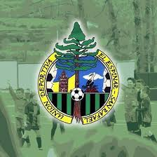

La U.D. El Espinar Sanrafael.
Esta es la pagina web del equipo
El 1 de julio de 2000 se fundó la Unión Deportiva El Espinar-San Rafael por la fusión de la A.D. Recreativo San Rafael y el Club Deportivo El Espinar. Este último comenzó en 1995 a establecer una estructura de fútbol base fundamental para el desarrollo educativo y deportivo en la localidad. La A.D. Recreativo San Rafael destacó en competiciones provinciales, obteniendo Ligas y Copas, pero no logró ascender a categorías superiores. Ambos clubes tuvieron éxitos individuales en competiciones provinciales, especialmente en categorías aficionadas y juveniles, y su trabajo en el fútbol base empezó a ser reconocido, produciendo jugadores para otros equipos de la provincia.